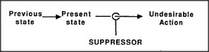

It would be wonderful never to make mistakes. One way would be to always have such perfect thoughts that none of them is ever wrong. But such perfection can't be reached. Instead we try, as best we can, to recognize our bad ideas before they do much harm. We can thus imagine two poles of self-improvement. On one side we try to stretch the range of the ideas we generate: this leads to more ideas, but also to more mistakes. On the other side, we try to learn not to repeat mistakes we've made before. All communities evolve some prohibitions and taboos to tell their members what they shouldn't do. That, too, must happen in our minds: we accumulate memories to tell ourselves what we shouldn't think.
But how could we make an agent to prevent us from doing something that, in the past, has led to bad or ineffectual results? Ideally, that agent would keep us from even thinking that bad idea again. But that seems almost paradoxical, like telling someone, Don't think about a monkey! Yet there is a way to accomplish this. To see how it works,
imagine the sequence of mental states that led to a certain mistake:
We could prevent the undesired action from taking place by introducing an agent that recognizes the state which, in the past, preceded the undesired action.
Suppressor-agents wait until you get a certain bad idea. Then they prevent your taking the corresponding action, and make you wait until you think of some alternative. If a suppressor could speak, it would say, Stop thinking that!
Suppressors could indeed prevent us from repeating actions that we've learned are bad. But it is inefficient to wait until we actually reach undesirable states, then have to backtrack. It would be more efficient to anticipate such lines of thought so that we never reach those states at all. In the next section we'll see how to do this by using agents called censors.
Censor-agents need not wait until a certain bad idea occurs; instead, they intercept the states of mind that usually precede that thought. If a censor could speak, it would say, Don't even begin to think that!
Though censors were conceived of long ago by Sigmund Freud, they're scarcely mentioned in present-day psychology. I suspect that this is a serious oversight and that censors play fundamental roles in how we learn and how we think. Perhaps the trouble is that our censors work too well. For, naturally, it is easier for psychologists to study only what someone does — instead of what someone doesn't do.